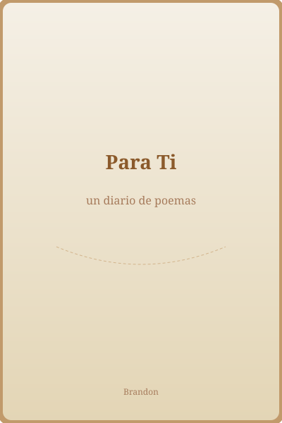

—

Diario Digital
No la voy a borrar, simplemente dejaré de escribir poemas para esta página, a fin y acabó nadie los lee

Biblioteca
Calendario
Favoritos
Sobre este diario
Este diario lo hice a razon de que no puedes hablar, lastimosamente no pude hacerlo en una aplicacion de telefono y asi puedas leerlo cuando quieras aun sin conexion, se que esto no arreglara el echo de no poderte comprar algo hoy pero si espero que minimo te guste, obviamente tanpoco lo voy a dejar asi, te voy a comprar algo si, pero tal vez te lo de regresando a clases
Aquí cada poema es de los que he escrito, y algo que debo aclarar es que no son los mismos que puse en la libreta (que aun no acabo xd) si no cada uno es diferente y escrito por mi para que nunca olvides que no importa que pase yo te amo como no tienes idea.